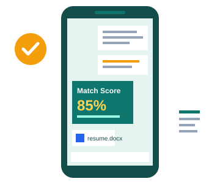

Telegram-бот, который подстраивает резюме под вакансию.
Отправь боту своё резюме и текст вакансии. Он найдёт в вакансии главные требования, перепишет резюме под них и покажет, насколько хорошо оно теперь подходит.
Бот не придумывает новых фактов: он меняет формулировки, чтобы ваш опыт совпал с требованиями вакансии. Если нужного навыка в резюме нет, он не допишет его за вас.